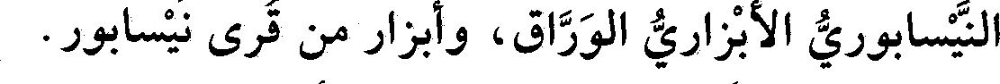
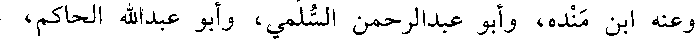
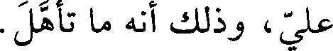
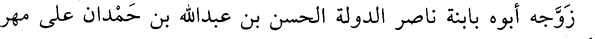

File: 000582.gt.txt (if the image is defective, simply delete all Arabic text and the line will be excluded)

ذكره أبو النضر الفامي.
File: 000583.gt.txt (if the image is defective, simply delete all Arabic text and the line will be excluded)

هراة.
File: 000584.gt.txt (if the image is defective, simply delete all Arabic text and the line will be excluded)

120 - عبدالسلام بن محمد بن أبي موسى البغدادي، أبو القاسم
File: 000585.gt.txt (if the image is defective, simply delete all Arabic text and the line will be excluded)
المخرمي الصوفي.
File: 000586.gt.txt (if the image is defective, simply delete all Arabic text and the line will be excluded)

سمع أبا بكر بن أبي داود، وأبا عروبة الحراني، وابن جوصا، وأحمد
File: 000587.gt.txt (if the image is defective, simply delete all Arabic text and the line will be excluded)

ابن عبدالوارث العسال. وعنه علي بن سعد البغوي، وابن جهضم، وأبو
File: 000588.gt.txt (if the image is defective, simply delete all Arabic text and the line will be excluded)

نعيم.
File: 000589.gt.txt (if the image is defective, simply delete all Arabic text and the line will be excluded)

ووثقه الخطيب(1)، وجاور بمكة مدة، وكان شيخ الحرم في زمانه،
File: 000590.gt.txt (if the image is defective, simply delete all Arabic text and the line will be excluded)

رحمه الله، ممن جمع بين علم الشريعة وعلم الحقيقة، جاور زمانا.
File: 000591.gt.txt (if the image is defective, simply delete all Arabic text and the line will be excluded)

121 - عبدالواحد بن الحسن بن أحمد بن خلف الجنديسابوري،
File: 000592.gt.txt (if the image is defective, simply delete all Arabic text and the line will be excluded)

أبو الحسين.
File: 000593.gt.txt (if the image is defective, simply delete all Arabic text and the line will be excluded)

وكان مولده سنة اثنتين وسبعين ومئتين.
File: 000594.gt.txt (if the image is defective, simply delete all Arabic text and the line will be excluded)

122 - علي بن أحمد بن علي، أبو الحسن المصيصي.
File: 000595.gt.txt (if the image is defective, simply delete all Arabic text and the line will be excluded)

حدث ببغداد عن أحمد بن خليد الحلبي، ومحمد بن معاذ دران.
File: 000596.gt.txt (if the image is defective, simply delete all Arabic text and the line will be excluded)

وعنه البرقاني، ومحمد بن عمر بن بكير، وعلي بن أحمد بن داود الرزاز،
File: 000597.gt.txt (if the image is defective, simply delete all Arabic text and the line will be excluded)

وأبو نعيم، وغيرهم.
File: 000598.gt.txt (if the image is defective, simply delete all Arabic text and the line will be excluded)

قال أبو نعيم : توفي، وكان فيه تساهل، في جمادى الآخرة سنة أربع
File: 000599.gt.txt (if the image is defective, simply delete all Arabic text and the line will be excluded)

وستين(2).
File: 000600.gt.txt (if the image is defective, simply delete all Arabic text and the line will be excluded)

123 - علي بن محمد بن المعلى، أبو الحسن الشونيزي
File: 000601.gt.txt (if the image is defective, simply delete all Arabic text and the line will be excluded)

البغدادي.
File: 000602.gt.txt (if the image is defective, simply delete all Arabic text and the line will be excluded)

230
File: 000603.gt.txt (if the image is defective, simply delete all Arabic text and the line will be excluded)

106 - إبراهيم بن أحمد بن محمد بن رجاء، أبو إسحاق
File: 000604.gt.txt (if the image is defective, simply delete all Arabic text and the line will be excluded)

النيسابوري الأبزاري الوراق، وأبزار من قرى نيسابور.
File: 000605.gt.txt (if the image is defective, simply delete all Arabic text and the line will be excluded)

سمع مسدد بن قطن، وجعفر بن أحمد الحافظ، والحسن بن سفيان،
File: 000606.gt.txt (if the image is defective, simply delete all Arabic text and the line will be excluded)

ومحمد بن محمد الباغندي، وسعيد بن عبدالعزيز، وسعيد بن هاشم
File: 000607.gt.txt (if the image is defective, simply delete all Arabic text and the line will be excluded)

الطبراني، وهذه الطبقة.
File: 000608.gt.txt (if the image is defective, simply delete all Arabic text and the line will be excluded)

وعنه ابن منده، وأبو عبدالرحمن السلمي، وأبو عبدالله الحاكم،
File: 000609.gt.txt (if the image is defective, simply delete all Arabic text and the line will be excluded)

وقال : كان ممن سلم المسلمون من لسانه ويده. وطلب الحديث على كبر
File: 000610.gt.txt (if the image is defective, simply delete all Arabic text and the line will be excluded)

السن، ورحل فيه. وسمعت أبا علي الحافظ يقول له: أنت يا أبا إسحاق
File: 000611.gt.txt (if the image is defective, simply delete all Arabic text and the line will be excluded)

«بهز بن أسد» ، يعني لتثبته وإتقانه. وسمعت أبا علي يمازحه غير مرة
File: 000612.gt.txt (if the image is defective, simply delete all Arabic text and the line will be excluded)

يقول : هذا الشيخ ما اغتسل من حلال قط. فيقول : ولا من حرام يا أبا
File: 000613.gt.txt (if the image is defective, simply delete all Arabic text and the line will be excluded)

علي، وذلك أنه ما تأهل.
File: 000614.gt.txt (if the image is defective, simply delete all Arabic text and the line will be excluded)

توفي في رجب، وله ست وتسعون سنة. وحدث بمروياته على
File: 000615.gt.txt (if the image is defective, simply delete all Arabic text and the line will be excluded)

القبول.
File: 000616.gt.txt (if the image is defective, simply delete all Arabic text and the line will be excluded)

107 - إسحاق بن محمد بن إسحاق النعالي البغدادي، أبو
File: 000617.gt.txt (if the image is defective, simply delete all Arabic text and the line will be excluded)

يعقوب.
File: 000618.gt.txt (if the image is defective, simply delete all Arabic text and the line will be excluded)

سمع أبا خليفة، والفريابي، وعبدالله بن ناجية.
File: 000619.gt.txt (if the image is defective, simply delete all Arabic text and the line will be excluded)

قال الخطيب(1) : حدثنا عنه البرقاني، وابن أبي الفوارس، وابن دوما
File: 000620.gt.txt (if the image is defective, simply delete all Arabic text and the line will be excluded)

النعالي، وقال ابن أبي الفوارس: كان ثقة مأمونا. مات يوم النحر.
File: 000621.gt.txt (if the image is defective, simply delete all Arabic text and the line will be excluded)

108 - إسحاق الأمير، أبو منصور ابن الإمام المتقي لله إبراهيم
File: 000622.gt.txt (if the image is defective, simply delete all Arabic text and the line will be excluded)

ابن المقتدر جعفر العباسي.
File: 000623.gt.txt (if the image is defective, simply delete all Arabic text and the line will be excluded)

زوجه أبو بابنة ناصر الدولة الحسن بن عبدالله بن حمدان على مهر
File: 000624.gt.txt (if the image is defective, simply delete all Arabic text and the line will be excluded)

مئة ألف دينار. توفي في هذا العام في المحرم عن إحدى وخمسين سنة.
File: 000625.gt.txt (if the image is defective, simply delete all Arabic text and the line will be excluded)

وكان ممن ترشح للخلافة.
File: 000626.gt.txt (if the image is defective, simply delete all Arabic text and the line will be excluded)

109 - إسماعيل بن أحمد بن محمد الخلالي التاجر.
File: 000627.gt.txt (if the image is defective, simply delete all Arabic text and the line will be excluded)

أحد الجوالين في طلب العلم؛ سمع من عمران بن موسى بن
File: 000628.gt.txt (if the image is defective, simply delete all Arabic text and the line will be excluded)

226
File: 000629.gt.txt (if the image is defective, simply delete all Arabic text and the line will be excluded)

سنة أربع وستين وثلاث ومئة
File: 000630.gt.txt (if the image is defective, simply delete all Arabic text and the line will be excluded)

95 - أحمد بن عبيدالله بن محمود بن شابور،
File: 000631.gt.txt (if the image is defective, simply delete all Arabic text and the line will be excluded)

الأصبهاني الفقيه المقرىء، ولقبه خرطبة(1).